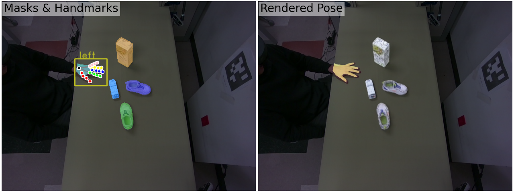

Abstract
We introduce a data capture system and a new dataset, HO-Cap, for 3D reconstruction and pose tracking of hands and objects in videos. The system leverages multiple RGB-D cameras and a HoloLens headset for data collection, avoiding the use of expensive 3D scanners or mocap systems. We propose a semi-automatic method for annotating the shape and pose of hands and objects in the collected videos, significantly reducing the annotation time compared to manual labeling. With this system, we captured a video dataset of humans interacting with objects to perform various tasks, including simple pick-and-place actions, handovers between hands, and using objects according to their affordance, which can serve as human demonstrations for research in embodied AI and robot manipulation. Our data capture setup and annotation framework will be available for the community to use in reconstructing 3D shapes of objects and human hands and tracking their poses in videos.
Data Capture Setup (9 RGB-D Cameras + HoloLens, No Mo-cap)

Object Shape Reconstruction using a Single Azure Camera


Semi-automatic Annotation Pipeline for Hand-Object Poses
The only human annotation required is to manually prompt two points for each object in the first frame to generate an initial segmentation mask of the object using SAM, and label the name of the object to associate it to an object in our database.

Labels provided by HOCap Dataset

Paper & Document

Citing HO-Cap
Please cite HO-Cap if it helps your research:
@misc{wang2024hocapcapturedataset3d,
title={HO-Cap: A Capture System and Dataset for 3D Reconstruction and Pose Tracking of Hand-Object Interaction},
author={Jikai Wang and Qifan Zhang and Yu-Wei Chao and Bowen Wen and Xiaohu Guo and Yu Xiang},
year={2024},
eprint={2406.06843},
archivePrefix={arXiv},
primaryClass={cs.CV},
url={https://arxiv.org/abs/2406.06843},
}Data
HO-Cap is licensed under CC BY 4.0.
The links to purchase the objects are provided in the objects_info.xlsx file.
The rendered video of poses and segmentations for each sequence could be found in renderings
We provide two options for downloading the dataset:
- Download the data using a Python script as introduced by HOCap-Toolkit.
- Download the individual zipped data from Box manually:
Once you successfully download the zip files, extract them to the "./datasets" folder, the directory structure should look like the following:
datasets
├── calibration
├── models
├── subject_1
│ ├── 20231025_165502
│ │ ├── 037522251142
│ │ │ ├── color_000000.jpg
│ │ │ ├── depth_000000.png
│ │ │ ├── label_000000.npz
│ │ │ └── ...
│ │ ├── 043422252387
│ │ ├── ...
│ │ ├── hololens_kv5h72
│ │ ├── meta.yaml
│ │ ├── poses_m.npy
│ │ ├── poses_o.npy
│ │ └── poses_pv.npy
│ ├── 20231025_165502
│ └── ...
├── ...
└── subject_9
We also provide the recordings used for objects reconstruction in object_collections
For instructions about using the dataset please see HOCap-Toolkit.
Code

HOCap-Toolkit
A Python package that provides evaluation and visualization tools for the HO-Cap dataset.
A Python package that provides evaluation and visualization tools for the HO-Cap dataset.
Contact
Send any comments or questions to Jikai Wang: jikai.wang@utdallas.edu.
Acknowledgements
This work was supported in part by the DARPA Perceptually enabled Task Guidance (PTG) Program under contract number HR00112220005 and the Sony Research Award Program
Last updated on 15-Dec-2024 | Template borrowed from DexYCB.